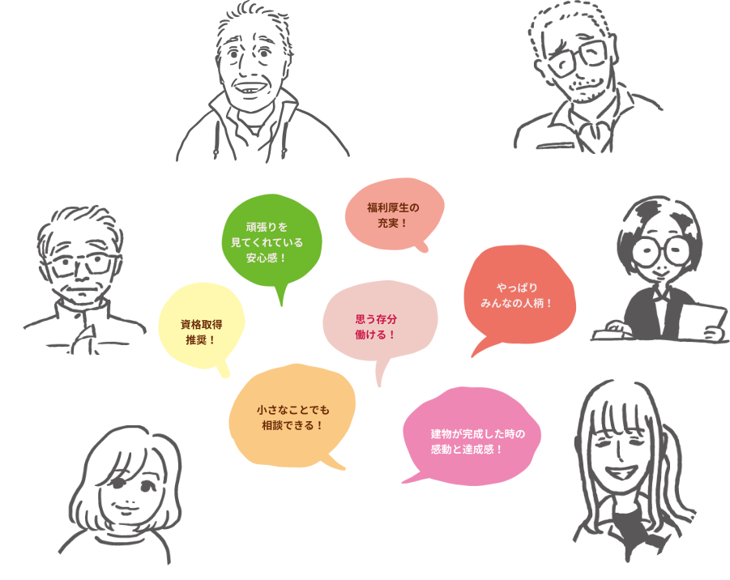

一丸となって進んでいくために働きやすい環境をつくりたい
この会社で働いて良かったと思える環境をつくり上げることが未来への架け橋になる
平成17年、本社工場移転、平成19年、2代目社長就任、平成22年、Mグレード取得。この三つの出来事を経て、私たちは大きく前進しました。「常に100点を取りに行く」という目標は仕事の質を向上させ、本社工場移転とMグレード取得は受注できる仕事のステージを上げてくれました。 鐵骨建設業は人が集う場所を創り出す仕事です。自分の手がけた仕事が、形となって残る喜びを感じられる仕事でもあります。私たちは「建物をつくり、残す」ことで、もっと社会に貢献できる可能性を秘めています。 私たちは、今、働いている仲間たちとともに会社を強くしたいと思っています。その思いを確かなものにするために、仕事の充実、職場環境の改善などの問題にも取り組んでいます。「この会社で働けてよかった」。この想いが社員全員の想いにするための組織づくりは、もう始まっています。
